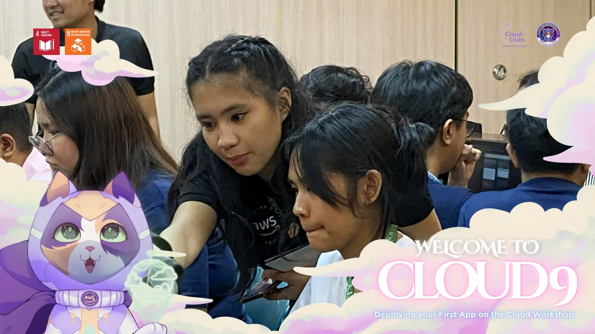
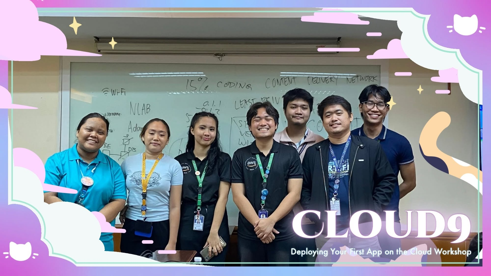

where i've been
-
AI Solutions Development Intern
Eskwelabsco-built an internal AI advisor chat: three personas using Gemini streaming, Google OAuth with a domain allowlist, Supabase with Row Level Security. the hardest part was the auth token passthrough to Supabase — getting the JWT from Google OAuth to evaluate correctly against RLS policies took most of the debugging time. shipped to production. the team uses it daily.
Next.js 14GeminiSupabaseGoogle OAuth -
President & AWS Student Builder Lead
AWS Student Builder Group · Adamson Universityrunning a 120+ member cloud community: workshops on actual AWS services, member onboarding, event production. also Executive Secretary for AWS Cloud Club Philippines — coordination across 40+ chapters nationwide. the org website is one of the projects.


AWSCommunityWorkshops -
IT Intern
Tutorials Dojowrote and published a technical article on Amazon Bedrock — LLM-as-a-Judge methodology, prompt design, model comparison. required running the evaluations, not just describing them.
Amazon BedrockTechnical Writing
AI Solutions Development Intern
Eskwelabsco-built an internal AI advisor chat: three personas using Gemini streaming, Google OAuth with a domain allowlist, Supabase with Row Level Security. the hardest part was the auth token passthrough to Supabase — getting the JWT from Google OAuth to evaluate correctly against RLS policies took most of the debugging time. shipped to production. the team uses it daily.
President & AWS Student Builder Lead
AWS Student Builder Group · Adamson Universityrunning a 120+ member cloud community: workshops on actual AWS services, member onboarding, event production. also Executive Secretary for AWS Cloud Club Philippines — coordination across 40+ chapters nationwide. the org website is one of the projects.
IT Intern
Tutorials Dojowrote and published a technical article on Amazon Bedrock — LLM-as-a-Judge methodology, prompt design, model comparison. required running the evaluations, not just describing them.
education & credentials
B.S. Computer Science
Adamson University · 2024–2028
DOST-SEI Scholar · Dean's List Top 1


working with me
give me a brief and a deadline and i'll figure it out. i work independently, document as i go, and ask questions before something breaks rather than after. GMT+8 (Manila), open to async and flexible hours. i adapt to whatever tools the team already uses.